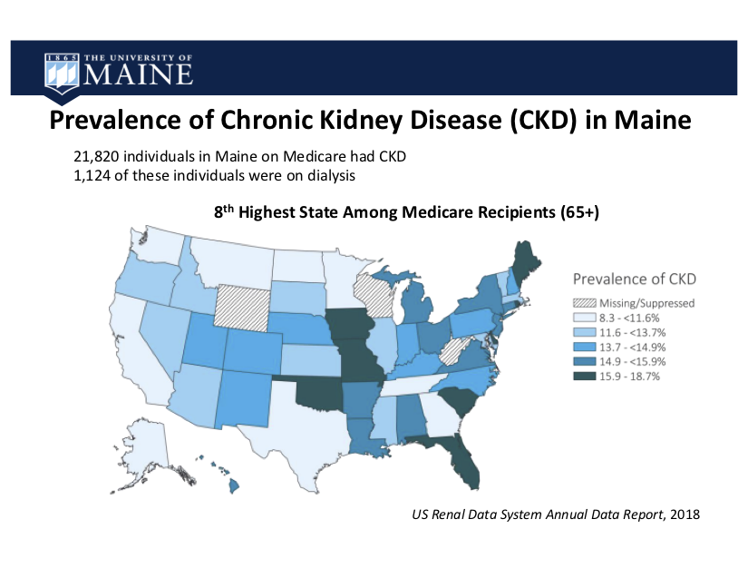

The Maine Chronic Kidney Disease (ME-CKD) Study
Benjamin King, Ph.D.1 and Jim Jarvis, M.D.2
1University of Maine Institute of Medicine, Department of Molecular and Biomedical Sciences, University of Maine2Clinical Research Center, Northern Light Eastern Maine Medical Center
Chronic Kidney Disease (CKD) in the US and Maine
Chronic Kidney Disease (CKD) results in a gradual loss of kidney function. Poor kidney function results in several complications, including heart disease. Dialysis or a kidney transplant is required when CKD progresses to end-stage kidney disease (Stage V CKD). The US Centers for Disease and Prevention estimates that more than 1 in 7 (15%) individuals in the US have CKD. Most of these 37 million people have been not diagnosed with CKD.
In Maine, the prevalence of CKD among Medicare participants was the 8th highest in the US in 2018. Over 21,000 Mainers had been diagnosed with CKD and over 1,200 of these individuals were on dialysis.
Jens Reuter, MD, The Jackson Laboratory
David Harder, PhD, University of Maine

The ME-CKD study seeks to identify genetic factors. Other risk factors for CKD include diabetes, hypertension, age, and environmental factors such as individual and community-level socioeconomic factors.
Study Goals
The goal of the Maine Chronic Kidney Disease (ME-CKD) study pilot project is to identify putative genetic loci that increase risk for CKD. Our secondary objectives are to examine associations between known CKD risk loci among study participants, and compare genetic data with other CKD studies to assess whether study participants are a representative cohort of CKD patients. We are employing a genome-wide association study design.Study Steering Committee Members
Hermann Haller, MD, MDI Biological LaboratoryJens Reuter, MD, The Jackson Laboratory
David Harder, PhD, University of Maine